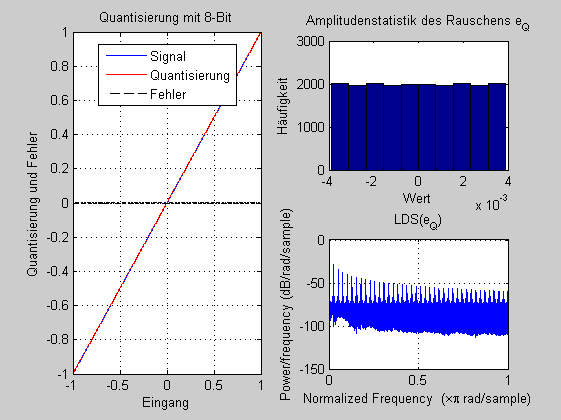

Contents
Quantisierung im 1.7 Format
Beim 1.7 Festkommaformat wird der Wertebereich von -1 bis +1 in
2^{8} gleiche Bereiche unterteilt. Die 8 Bits bedeuten beginnend mit dem MSB
(most significant bit): -1, 2^{-1}, 2^{-2}, ... 2^{-7).(i)Welche Bit-Folgen codieren die Zahlen 0.5; 0.75; -0.75.
(ii)Simulieren Sie die Quantisierung für
Zahlen von -1 bis 1-2^{-7}und berechnen Sie den Quantisierungsfehler,
das SNR und das Leistungsdichtespektrum (LDS) des Rauschens (pwelch.m). clear all; close all;
Beispiele 1.7 Codierung
Signalerzeugung
BIT = 8;
delta = 2^(-(BIT-1));
x = [-1:0.0001:(1-delta)];
Quantisierung und Berechnung von Rauschleistung und SNR
x_q = round(x*2^(BIT-1))/2^(BIT-1);
e_q = x - x_q;
rauschleistung = (e_q*e_q')/(length(e_q))
theorie =delta^2/12
SNR_dB = 10*log10((x*x')/(e_q*e_q'))
rauschleistung =
5.0862e-006
theorie =
5.0863e-006
SNR_dB =
48.1311
Darstellung
figure(1);subplot(2,2,[1 3]); plot(x,x); grid on; axis([ -1,1 ,-1, 1]);
hold on; plot(x,x_q,'r'); plot(x,e_q,'k--'); hold off;
title(['Quantisierung mit ', int2str(BIT),'-Bit']);xlabel('Eingang'); ylabel('Quantisierung und Fehler');
legend('Signal', 'Quantisierung','Fehler', 'location','best');
subplot(2,2,2); hist(e_q); title('Amplitudenstatistik des Rauschens e_Q');
xlabel('Wert'); ylabel('Häufigkeit');
subplot(2,2,4); pwelch(e_q); title('LDS(e_Q)');
